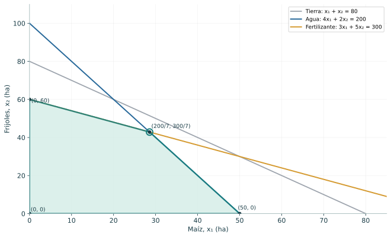
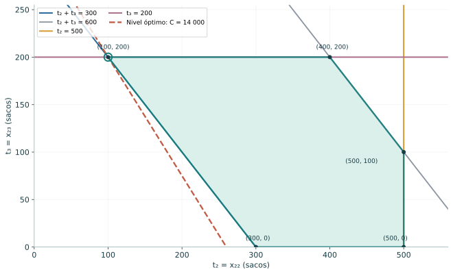

Modelación de problemas reales
Capítulo 1 · Sección 1.9
De una situación real a un modelo matemático
En los apartados anteriores estudiamos las regiones factibles, los vértices y los resultados de optimalidad. Ahora invertiremos la perspectiva: partiremos de una situación concreta y construiremos el programa lineal que la representa.
Modelar no es solamente asignar letras a cantidades. Es decidir qué puede elegirse, qué se pretende optimizar y cuáles son las condiciones que toda decisión aceptable debe satisfacer.
¿Cuáles cantidades puede decidir la persona responsable del problema y cuáles son datos que ya vienen fijados por el contexto?
En un modelo de programación lineal distinguimos las variables de decisión, la función objetivo, las restricciones y el dominio de las variables. También debemos comprobar que las unidades físicas sean consistentes y que las soluciones del modelo tengan significado en la situación original.
Producción agrícola: distribuir recursos limitados
El problema
Un agricultor dispone de 80 hectáreas, 200 unidades de agua de riego y 300 kg de fertilizante. Puede sembrar maíz y frijoles. Los consumos por hectárea y las ganancias son los siguientes:
| Concepto (por hectárea) | Maíz | Frijoles |
|---|---|---|
| Agua de riego (unidades) | 4 | 2 |
| Fertilizante (kg) | 3 | 5 |
| Ganancia (unidades monetarias) | 500 | 400 |
Pregunta: ¿cuántas hectáreas debe dedicar a cada cultivo para maximizar la ganancia total sin superar sus disponibilidades?
¿Es correcto escribir \(x_1+x_2=80\)? No necesariamente: disponer de 80 hectáreas no significa estar obligado a cultivar toda la tierra.
Variables de decisión y función objetivo
Definimos \(x_1\) como la cantidad de hectáreas destinadas al maíz y \(x_2\) como la cantidad de hectáreas destinadas a los frijoles. Como las ganancias por hectárea son 500 y 400 unidades monetarias, respectivamente, la ganancia total es
\[z=500x_1+400x_2.\]
Por tanto, se busca maximizar \(z\).
Restricciones y sus unidades
- Tierra: cada hectárea sembrada utiliza una hectárea del terreno disponible, por lo que \(x_1+x_2\leq80\).
- Agua: sembrar \(x_1\) hectáreas de maíz requiere \(4x_1\) unidades de agua y sembrar \(x_2\) hectáreas de frijoles requiere \(2x_2\), de modo que \(4x_1+2x_2\leq200\).
- Fertilizante: el consumo total es \(3x_1+5x_2\) kg; por consiguiente, \(3x_1+5x_2\leq300\).
- No negatividad: \(x_1,x_2\geq0\).
Reunimos las condiciones en el programa lineal
\[ \begin{aligned} \text{Maximizar}\quad &z=500x_1+400x_2\\ \text{sujeto a}\quad &x_1+x_2\leq80,\\ &4x_1+2x_2\leq200,\\ &3x_1+5x_2\leq300,\\ &x_1,x_2\geq0. \end{aligned} \]
Interpretación geométrica y solución
La región factible es la intersección de los semiplanos definidos por las tres disponibilidades y el primer cuadrante. Las restricciones de agua y fertilizante se intersectan en
\[ \begin{cases} 4x_1+2x_2=200,\\ 3x_1+5x_2=300, \end{cases} \qquad\Longrightarrow\qquad (x_1,x_2)=\left(\frac{200}{7},\frac{300}{7}\right). \]
En este punto se utilizan \(\frac{500}{7}<80\) hectáreas, es decir, la restricción de tierra no es activa. La ganancia correspondiente es
\[z^*=500\left(\frac{200}{7}\right)+400\left(\frac{300}{7}\right) =\frac{220000}{7}\approx31428{,}57.\]
La figura representa las tres rectas frontera y el polígono factible sombreado. Cada vértice resulta de la intersección de dos fronteras activas (incluidos los ejes).

Para justificar que es el máximo, podemos comparar el valor de la función objetivo en los vértices de la región factible: \((0,0)\), \((50,0)\), \(\left(\frac{200}{7},\frac{300}{7}\right)\) y \((0,60)\). Los valores respectivos son \(0\), \(25000\), \(\frac{220000}{7}\) y \(24000\).
El modelo recomienda sembrar aproximadamente 28,57 hectáreas de maíz y 42,86 hectáreas de frijoles. Se agotan el agua y el fertilizante, pero queda terreno sin cultivar. Esto no es una contradicción: el recurso limitante no tiene por qué ser la tierra.
Si se exigieran hectáreas enteras, ya no estaríamos ante este mismo programa lineal continuo: habría que incorporar restricciones de integridad, que estudiaremos posteriormente.
Transporte de arroz: un modelo de distribución
El problema
Una empresa arrocera tiene dos plantas, \(P_1\) y \(P_2\), que deben enviar toda su producción semanal a tres supermercados, \(S_1\), \(S_2\) y \(S_3\). Cada supermercado debe recibir exactamente su demanda.
Los costos de transporte se indican en miles de colones por saco:
| Origen | \(S_1\) | \(S_2\) | \(S_3\) | Producción (sacos) |
|---|---|---|---|---|
| \(P_1\) | 12 | 15 | 14 | 400 |
| \(P_2\) | 10 | 18 | 16 | 600 |
| Demanda (sacos) | 300 | 500 | 200 | 1000 |
Observá que la oferta total es \(400+600=1000\) sacos y la demanda total es \(300+500+200=1000\) sacos. El problema está balanceado.
Variables de decisión
Para \(i\in\{1,2\}\) y \(j\in\{1,2,3\}\), definimos \(x_{ij}\) como la cantidad de sacos enviados desde la planta \(P_i\) hasta el supermercado \(S_j\).
En particular, tenemos seis variables, una por cada ruta de transporte. Por ejemplo, \(x_{12}\) representa los sacos enviados de \(P_1\) a \(S_2\).
Objetivo y restricciones
El costo total, expresado en miles de colones, es
\[C=12x_{11}+15x_{12}+14x_{13}+10x_{21}+18x_{22}+16x_{23}.\]
La producción de cada planta debe enviarse completamente:
\[x_{11}+x_{12}+x_{13}=400,\qquad x_{21}+x_{22}+x_{23}=600.\]
Cada supermercado debe recibir exactamente lo requerido:
\[ \begin{aligned} x_{11}+x_{21}&=300,\\ x_{12}+x_{22}&=500,\\ x_{13}+x_{23}&=200. \end{aligned} \]
Además, \(x_{ij}\geq0\) para todas las rutas. Así, el objetivo consiste en minimizar \(C\) sujeto a estas cinco igualdades y a la no negatividad.
En este contexto no se permite almacenar sacos en las plantas ni entregar más o menos de lo solicitado. Esa interpretación determina el signo \(=\) de las restricciones.
Reducción por eliminación de Gauss–Jordan
El modelo tiene seis variables y cinco igualdades. Como la oferta total coincide con la demanda total, una de las ecuaciones es combinación de las otras cuatro; por ello quedan dos grados de libertad. Para ver esa relación explícitamente, escribimos el sistema en el orden
\[ (x_{11},x_{12},x_{13},x_{21},x_{22},x_{23}). \]
La matriz aumentada inicial es
\[ \left(\begin{array}{rrrrrr|r} 1&1&1&0&0&0&400\\ 0&0&0&1&1&1&600\\ 1&0&0&1&0&0&300\\ 0&1&0&0&1&0&500\\ 0&0&1&0&0&1&200 \end{array}\right). \]
Primeros pivoteos. Aplicamos las operaciones elementales \(F_3\leftarrow F_3-F_1\), \(F_2\leftrightarrow F_3\) y \(F_2\leftarrow -F_2\). La matriz queda
\[ \left(\begin{array}{rrrrrr|r} 1&1&1&0&0&0&400\\ 0&1&1&-1&0&0&100\\ 0&0&0&1&1&1&600\\ 0&1&0&0&1&0&500\\ 0&0&1&0&0&1&200 \end{array}\right). \]
Eliminación en la segunda columna. Realizamos \(F_1\leftarrow F_1-F_2\), \(F_4\leftarrow F_4-F_2\), \(F_3\leftrightarrow F_4\) y \(F_3\leftarrow-F_3\), obteniendo
\[ \left(\begin{array}{rrrrrr|r} 1&0&0&1&0&0&300\\ 0&1&1&-1&0&0&100\\ 0&0&1&-1&-1&0&-400\\ 0&0&0&1&1&1&600\\ 0&0&1&0&0&1&200 \end{array}\right). \]
Finalmente, mediante
\[ \begin{aligned} F_2&\leftarrow F_2-F_3, & F_5&\leftarrow F_5-F_3,\\ F_1&\leftarrow F_1-F_4, & F_3&\leftarrow F_3+F_4,\\ F_5&\leftarrow F_5-F_4, \end{aligned} \]
se obtiene la matriz reducida:
\[ \boxed{\left(\begin{array}{rrrrrr|r} 1&0&0&0&-1&-1&-300\\ 0&1&0&0&1&0&500\\ 0&0&1&0&0&1&200\\ 0&0&0&1&1&1&600\\ 0&0&0&0&0&0&0 \end{array}\right)}. \]
La última fila es \(0=0\). Expresa la dependencia entre oferta y demanda; no significa que el modelo carezca de restricciones. Como hay cuatro pivotes en seis columnas, podemos tomar dos variables libres.
Variables libres y expresiones de las variables originales
Elegimos \(t_2=x_{22}\) y \(t_3=x_{23}\). De la matriz reducida obtenemos
\[ \begin{aligned} x_{11}&=-300+t_2+t_3, & x_{12}&=500-t_2,\\ x_{13}&=200-t_3, & x_{21}&=600-t_2-t_3,\\ x_{22}&=t_2, & x_{23}&=t_3. \end{aligned} \]
Estas expresiones permiten recuperar las seis rutas de transporte una vez que conozcamos los valores óptimos de \(t_2\) y \(t_3\).
Restricciones de no negatividad y modelo reducido
No basta con satisfacer las igualdades: todos los envíos deben ser no negativos. Sustituyendo cada expresión anterior,
\[ \begin{aligned} -300+t_2+t_3&\geq0, & 500-t_2&\geq0,\\ 200-t_3&\geq0, & 600-t_2-t_3&\geq0,\\ t_2&\geq0, & t_3&\geq0. \end{aligned} \]
Por tanto, la región factible reducida queda dada por
\[ \mathcal R=\left\{(t_2,t_3)\in\mathbb R^2: \begin{array}{l} t_2+t_3\geq300,\\ t_2+t_3\leq600,\\ t_2\leq500,\quad t_3\leq200,\\ t_2,t_3\geq0 \end{array}\right\}. \]
Región factible reducida y vértices
En la Figura 10.2 aparecen las rectas frontera, el polígono factible sombreado, los vértices y la recta de nivel correspondiente al costo mínimo. El problema de seis variables puede ahora analizarse geométricamente en dos variables.

Los vértices de \(\mathcal R\) son
\[ (100,200),\quad (400,200),\quad(500,100),\quad(500,0),\quad(300,0). \]
Sustitución y función objetivo reducida
Al sustituir las seis expresiones en el costo total, obtenemos
\[ \begin{aligned} C={}&12(-300+t_2+t_3)+15(500-t_2)+14(200-t_3)\\ &+10(600-t_2-t_3)+18t_2+16t_3\\ ={}&12700+5t_2+4t_3. \end{aligned} \]
La nueva formulación, equivalente a la original, es
\[ \boxed{\begin{aligned} \text{Minimizar}\quad &C=12700+5t_2+4t_3\\ \text{sujeto a}\quad & (t_2,t_3)\in\mathcal R. \end{aligned}} \]
Para decidir cuál vértice proporciona el costo mínimo evaluamos la función objetivo:
| Vértice \((t_2,t_3)\) | \(C=12700+5t_2+4t_3\) (miles de colones) |
|---|---|
| \((100,200)\) | 14000 |
| \((400,200)\) | 15500 |
| \((500,100)\) | 15600 |
| \((500,0)\) | 15200 |
| \((300,0)\) | 14200 |
El mínimo se alcanza en \((t_2^*,t_3^*)=(100,200)\), marcado en la figura. No se ha utilizado el método Simplex.
Recuperación de la solución original
Sustituimos \(t_2=100\) y \(t_3=200\) en las expresiones obtenidas por Gauss–Jordan:
\[ \begin{aligned} x_{11}^*&=-300+100+200=0, &x_{12}^*&=500-100=400,\\ x_{13}^*&=200-200=0, &x_{21}^*&=600-100-200=300,\\ x_{22}^*&=100, &x_{23}^*&=200. \end{aligned} \]
La distribución óptima es
| Ruta | Sacos enviados |
|---|---|
| \(P_1\to S_1\) | 0 |
| \(P_1\to S_2\) | 400 |
| \(P_1\to S_3\) | 0 |
| \(P_2\to S_1\) | 300 |
| \(P_2\to S_2\) | 100 |
| \(P_2\to S_3\) | 200 |
El costo mínimo es \(C^*=14000\) miles de colones, es decir, 14 millones de colones. Podemos comprobar directamente que todas las ofertas y demandas se satisfacen.
La reducción por Gauss–Jordan conserva el sistema de igualdades; las restricciones de no negatividad se trasladan a las variables libres. Solo después de obtener toda la región factible reducida es válido resolver el problema gráficamente y reconstruir las decisiones originales.
Comparación de los dos modelos
| Característica | Producción agrícola | Transporte de arroz |
|---|---|---|
| Decisiones | Hectáreas por cultivo | Sacos por ruta |
| Objetivo | Maximizar ganancias | Minimizar costos |
| Restricciones principales | Disponibilidades máximas | Ofertas y demandas exactas |
| Variables | 2 | 6 |
| Geometría | Representación directa en el plano | Reducción a dos variables |
La estructura matemática depende del significado de los datos. No existe una regla que obligue a que todas las restricciones sean del mismo tipo.
Actividades de comprensión
Actividad: validar un modelo
En el problema agrícola, una persona propone reemplazar \(x_1+x_2\leq80\) por \(x_1+x_2=80\).
- Explicá qué supuesto adicional estaría incorporando.
- Determiná si el plan óptimo encontrado seguiría siendo factible.
- Describí una situación real en la que sí sería apropiada la igualdad.
Actividad: interpretar una ruta
En el problema de transporte, suponé que el costo de la ruta \(P_1\to S_2\) aumenta de 15 a 20 miles de colones por saco.
- Escribí la nueva función objetivo; no modifiqués las restricciones.
- Evaluá el costo de la distribución óptima anterior con el nuevo precio.
- Explicá por qué ese cálculo no basta para afirmar que la distribución anterior sigue siendo óptima.
Actividad: formular sin resolver
Una cooperativa fabrica dos productos, \(A\) y \(B\). Cada unidad de \(A\) requiere 2 horas de máquina y 3 kg de materia prima; cada unidad de \(B\) requiere 4 horas y 1 kg. Se dispone de 40 horas de máquina y 36 kg de materia prima. La ganancia por unidad es de 70 y 50 unidades monetarias, respectivamente.
Definí las variables y formulá el programa lineal que maximiza la ganancia. Indicá el significado de cada restricción y sus unidades. No utilicés el método Simplex.
Ideas para recordar
- Una variable de decisión representa una cantidad que puede elegirse y debe tener unidades claras.
- Una restricción expresa una condición del contexto; su sentido (\(\leq\), \(\geq\) o \(=\)) debe justificarse.
- Las restricciones no negativas también forman parte del modelo.
- La solución matemática debe interpretarse y verificarse en el problema original.
- Modelos con muchas variables pueden admitir reducciones, pero no toda reducción conserva una interpretación sencilla.
En el método gráfico aprovechamos la estructura geométrica de problemas de dos variables. Más adelante, el método Simplex permitirá resolver modelos con muchas variables sin depender de su representación gráfica.